We hypothesize that actors who are white, male, straight, and from the coasts will reach success in their careers faster than other actors. To test our hypothesis, we will examine the careers (in terms of film credits) of all actors who have received an Oscar nomination, meaning they all eventually achieved the same level of success at some point in their careers and can qualitatively be considered the same caliber as each other.
Why did you use this statistical test or ML algorithm?
We used multiple linear regression since we hypothesized that multiple variables
would affect the success of an actor. By using multiple regression, we were
able to evaluate the extent to which race, gender, sexual orientation, and birth place
explained the number of credits it took an actor to hit their big break.
For the dependent variable that captures the "success" of an actor,
we calculated the “credits to success”. This is the number of films an actor
was cast in before appearing in a film that was rated 7.5/10 or higher
(this point is their “big break”). An actor with a lower number of
“credits to success” reached success more quickly than an actor with a
higher number of “credits to success.”
Which other tests did you consider or evaluate?
We did not use any other tests for evaluation, but we consider
attribute clustering as a possible method to see similarities between
actors.
How did you measure success or failure? Why that metric/value?
We measured success by the magnitude of the R-squared value because
this metric would tell us how much of the "credits to success" variable
was explained by any of the demographic variables of interest.
What challenges did you face evaluating the model?
When evaluating the model, we faced the challenge of not being able to
produce linear plots of our regression because our independent variables
of interest were qualitative in nature and we could not convert them
into quantitative data without prescribing meaning or bias to one
category of race, region, or sexual orientation over another.
Did you have to clean or restructure your data?
In order to use a multiple linear regression to attempt to produce meaningful results,
we had to bucket the qualitative data of the individual birthplace cities into
regions within the United States and a bin for international (see below for map used to bucket birthplace cities).
For the regression, we had to convert our independent variables of interest, race, region, and sexual orientation
into dummy variables, as they are categorical/discrete and not continuous.
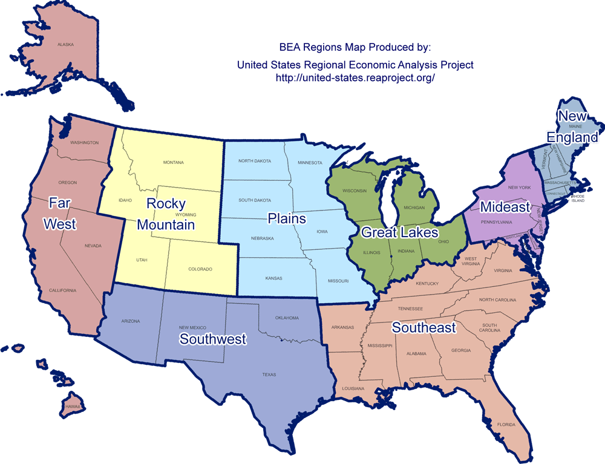
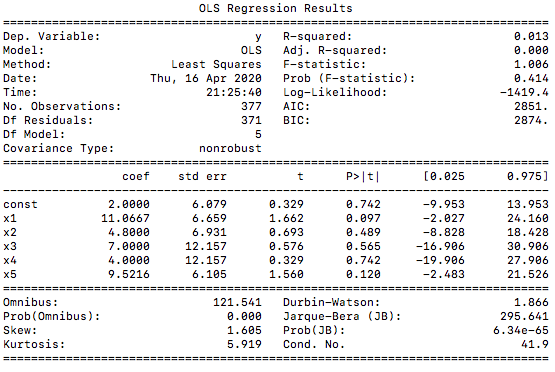 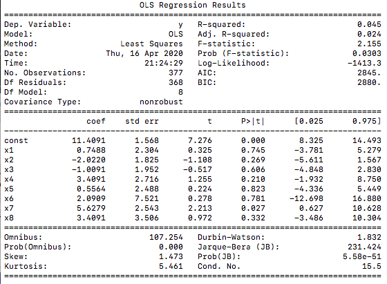 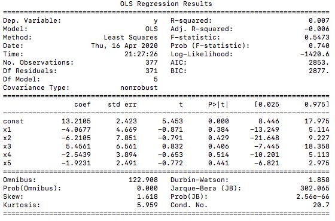
What is your interpretation of the results?
Based on the regression analysis, given the low R-squared values and
confidence intervals that straddle 0, we cannot conclude that any of the
demographic independent variables had a causal relationship with
the number of credits to success for Oscar-nominated actors.
Do accept or deny the hypothesis, or are you satisfied with your prediction accuracy?
We cannot accept or deny our hypothesis using these results.
Intuitively, how do you react to the results? Are you confident in the results?
Intuitively, we were not surprised that our results showed there is not necessarily a
causal relationship between demographic characteristics and career pace to success because
our data set is skewed actors who did reach a high level of success within the industry at some point
(as opposed to the many other people who attempt a career in acting) and there are a myriad of other
factors that may have contributed to why an actor was cast or not cast in a film beyond their
race, sexual orientation, or birthplace region.
The following bar charts visualize the data based on the three demographic characteristics we examined.
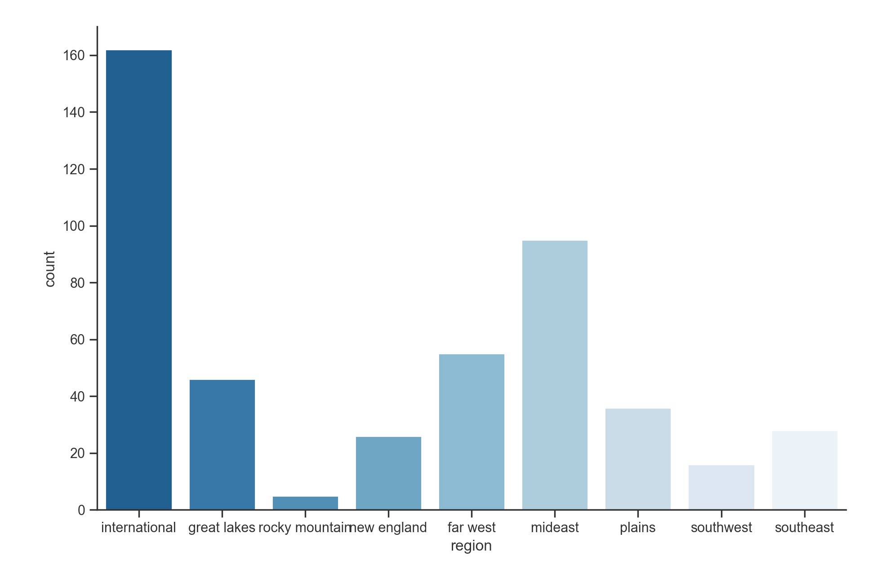 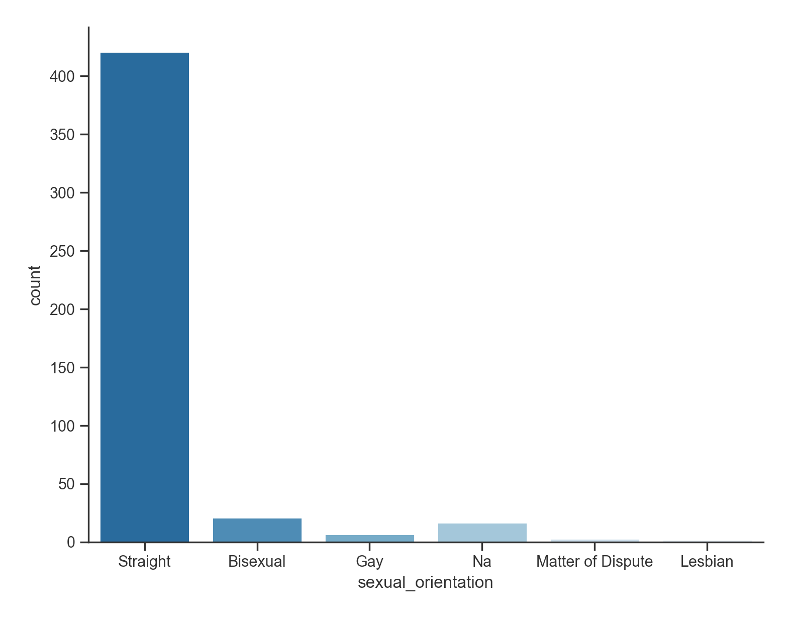 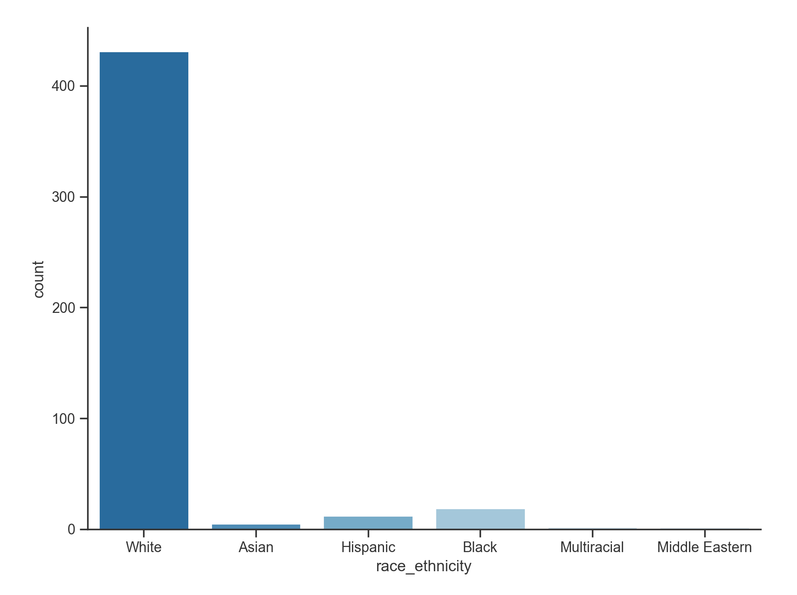 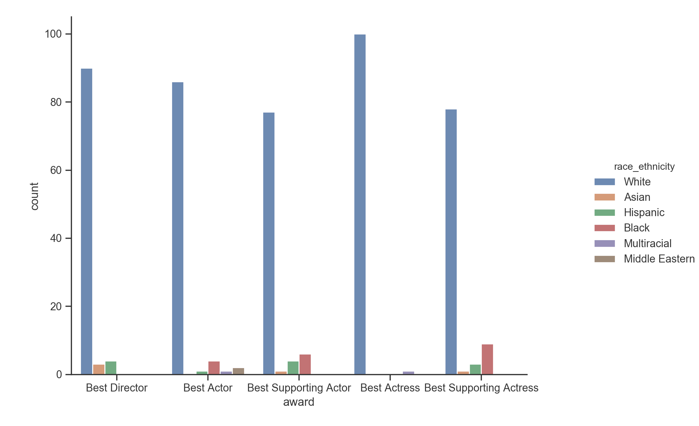
The three box plots below portray the range of the number of credits to
success for actors of different demographic backgrounds.
The lower the block on the y-axis means that on average, it took actors in that group fewer film credits
to be cast in a highly-rated movie and thus reach success more quickly.
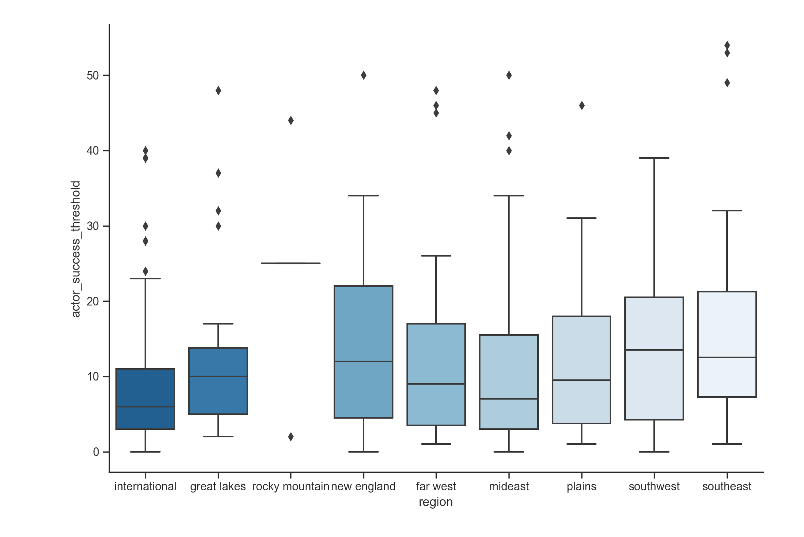
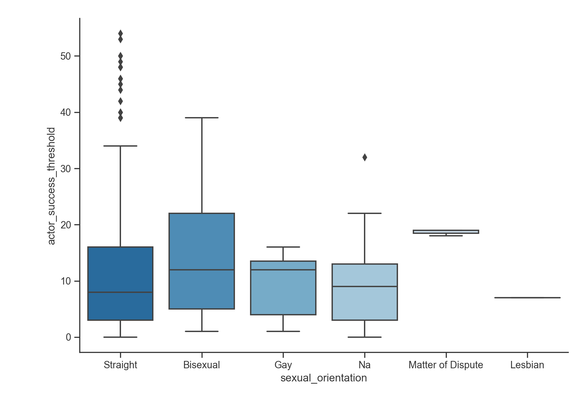
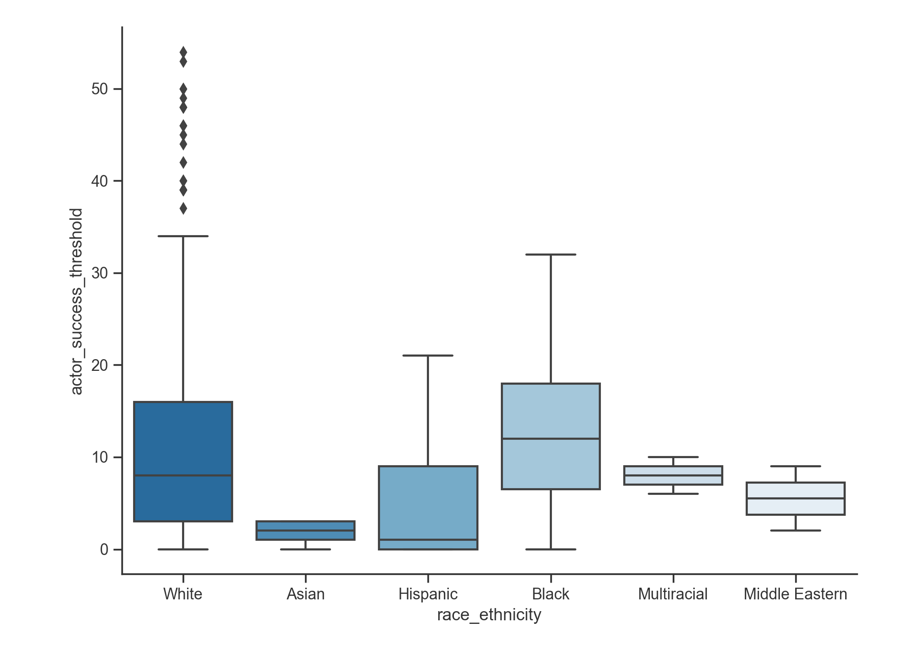
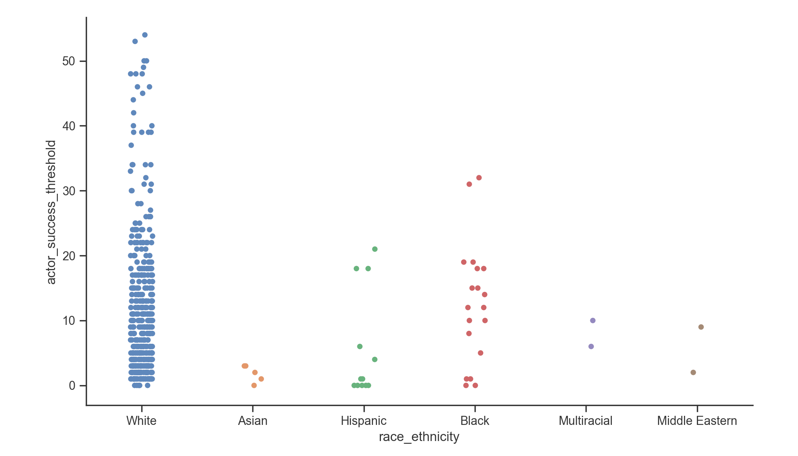
For your visualization, why did you pick this graph?
We chose box plots and jitter plots because they show variation within
a specific sub-category despite the overall size of that group. For example,
even though the number of Asian actors in that data set is fairly small,
it is still meaningful to note the close clustering of the individual
data points and the narrow range of the box plot because this shows that
those actors all generally experienced a similar career growth pace.
What alternative ways might you communicate the result?
We did not have a primary means of communicating the regression
results visually, the details of which are discussed below.
Were there any challenges visualizing the results, if so, then what where they?
To visualize the data, we used seaborn, an extension of matplotlib. The
initial challenge was learning how to use matplotlib and seborn. After
we figured out that those libraries could count each attribute (for example,
in the sexual_orientation graph, it would count each instance of "Straight"),
it was much easier to generate the graphs.
As mentioned in the Methodology section, we could not create a
visualization of the regression results because of the qualitative
nature of the data.
Will your visualization require text to provide context or is it standalone
(either is fine, but it's recognize which type your visualization is)?
Some context for the meaning of actor_success_threshold would be useful
to be able to the interpret the graph's meaning and compare the success of
actors from different demographic backgrounds.
Based on our first initial statistical test, we do not have sufficient evidence to accept or deny our hypothesis. We would like to conduct additional regressions based on other ways to define success, such as commercial success, based on box office revenue, and critical success in terms of award nominations for films that actors have been in. We also want to consider the demographic variable of age and how this impacts an actor's career.